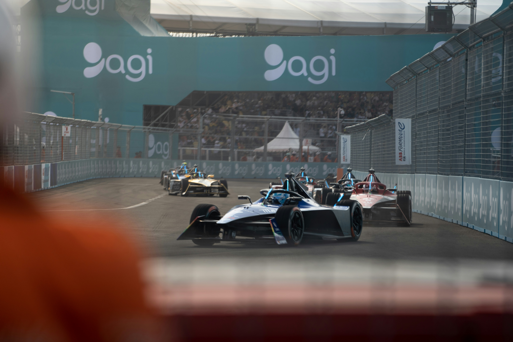

Де вирішується доля титулу
Ключові траси


Перегони майбутнього. Повністю електричні боліди змагаються на вулицях найбільших міст світу.
Formula E довела, що електричні перегони можуть бути такими ж видовищними, як і традиційний автоспорт. Боліди Gen3 розганяються з 0 до 100 км/год швидше, ніж середній автомобіль Формули 1.
Гонки проходять просто в центрі мегаполісів — Нью-Йорк, Лондон, Джакарта, Монако — перетворюючи міські вулиці на високошвидкісні траси на один вікенд.
Formula E з'явилася у 2014 році як перший у світі повністю електричний кільцевий чемпіонат, з ідеєю проводити гонки просто в центрі великих міст — від Пекіна до Нью-Йорка. Перші сезони вимагали заміни боліда в середині гонки через обмежений запас енергії батареї.
З появою боліда Gen2 у 2018 році необхідність зміни машини зникла — батареї стало достатньо на всю гонку. Покоління Gen3, представлене у сезоні 2022/23, зробило боліди Formula E найшвидшими за прискоренням серед усіх відкритоколісних гоночних машин світу.
Серія отримала статус чемпіонату світу FIA у сезоні 2020/21 — це перший новий чемпіонат світу з автоспорту за кілька десятиліть.
Гонки Formula E проходять на тимчасових вуличних трасах в один змагальний день: кваліфікація вранці та гонка ввечері. Особливість формату — Attack Mode: пілоти мають проїхати через визначену зону поза оптимальною траєкторією, щоб на обмежений час отримати додаткову потужність.
Система нарахування очок дзеркальна до Формули 1 (25-18-15-12-10-8-6-4-2-1), з додатковими балами за поул-позицію та найшвидше коло.
Боліди Gen3 розвивають потужність до 350 кВт (близько 470 к.с.) у гоночному режимі та здатні розганятися з 0 до 100 км/год швидше ніж боліди Формули 1, завдяки миттєвій електричній тязі. Уперше в історії категорії Gen3 отримав рекуперацію гальмування на передній осі.
На відміну від традиційних гоночних серій, у Formula E немає індивідуальних заводських двигунів внутрішнього згоряння — конкуренція зосереджена на ефективності електроприводу, програмному забезпеченні та керуванні енергією протягом гонки.
Чемпіоном сезону 2024/25 став британець Олівер Роуленд (Nissan Formula E Team) — перший титул у кар'єрі, здобутий достроково на E-Prix у Берліні завдяки чотирьом перемогам протягом сезону.
Сезон 2025/26 триває за участю провідних заводських команд, включно з Porsche, Jaguar, DS, Nissan та Mahindra, які продовжують боротьбу за титул уже в статусі чинних чемпіонів або претендентів.
Дебютний сезон стартував гонкою прямо на площі перед Олімпійським стадіоном «Пташине гніздо».
Нове покоління боліда прибрало необхідність зміни машини всередині гонки.
FIA офіційно визнала Formula E чемпіонатом світу нарівні з Ф1 та WEC.
Олівер Роуленд здобув свій перший титул чемпіона світу з двома етапами до завершення сезону.
Натисніть «Детальніше», щоб прочитати повну біографію, статистику та кар'єрні досягнення.
Найуспішніший виробник в історії «24 годин Ле-Мана» та символ інженерної досконалості.
Заводська команда Mercedes, що домінувала в еру гібридних турбо-двигунів Формули 1.
Заводська команда Jaguar у Formula E, одна з найуспішніших з появи серії.
Альянс DS Automobiles та Team Penske у Formula E, багаторазовий призер чемпіонату.

Чемпіонат світу з перегонів на витривалість. Головна подія — легендарні «24 години Ле-Мана».
Перейти на сторінку →
Чемпіонат світу з ралі. Боротьба зі стихією на ґрунті, снігу, асфальті та гравії у будь-яку погоду.
Перейти на сторінку →
Найважче ралі-рейд планети. Пустелі, дюни та бездоріжжя на тисячі кілометрів випробовують межі людини й техніки.
Перейти на сторінку →Перегляньте повну галерею, історію автоспорту та профілі легендарних команд і пілотів.
Під час підготовки цієї сторінки використано перевірені офіційні та довідкові джерела.